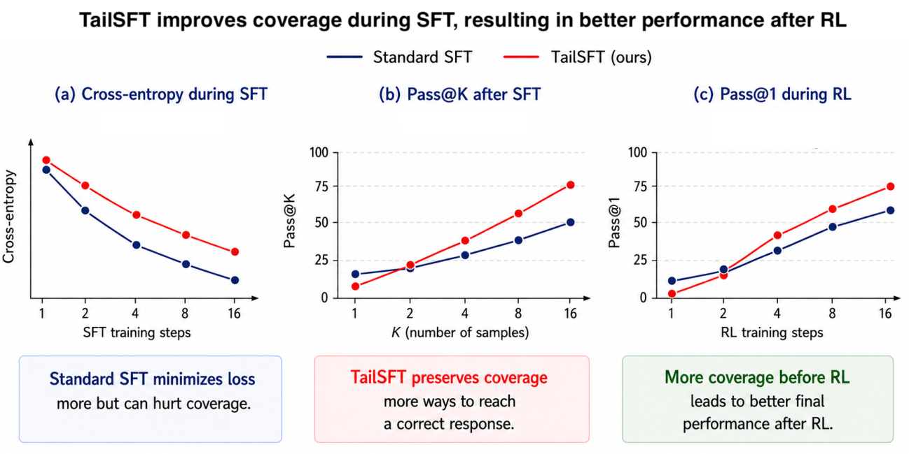
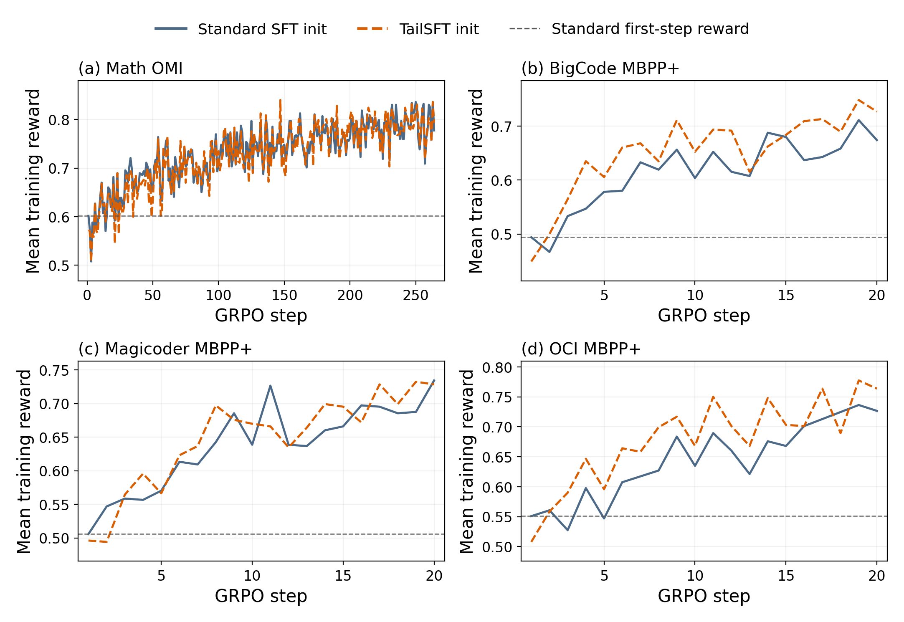

TailSFT: Filtered Fine-Tuning Improves Post-Training Performance
TL;DR
- TailSFT (arXiv 2608.25756; Sadhika Malladi, Samy Jelassi, Dylan Foster, Jordan Ash, Akshay Krishnamurthy — Microsoft Research NYC/UCSD) makes one change to SFT: each batch, drop the \( \gamma_t \) fraction of sequences whose loss has improved most relative to the initial policy, and train cross-entropy only on the under-modeled tail.
- The target is coverage (pass@K at large K), not cross-entropy: on OLMo-3 7B, TailSFT improves pass@16 in 15 of 18 dataset×benchmark pairs (up to +16.8 absolute on CruxEval-O) even where pass@1 gets worse — and those higher-coverage checkpoints then win every matched GRPO comparison, +1.2 to +3.9 absolute pass@1 after RL, with early reward climbing up to 2.5× faster.
- The reference point matters and is provable: filtering relative to \( \pi_0 \) (stop training a response once \( \pi(y|x) \geq \beta\,\pi_0(y|x) \)) achieves coverage no worse than standard SFT or any absolute-threshold filter, because the base model's relative preferences among correct responses are information worth preserving.
Why this matters
RLVR only reinforces what it can sample. If the SFT checkpoint can't produce a rewarded response within the rollout budget, the whole group gets zero reward and zero gradient — so the currency that matters at the SFT→RL handoff is not cross-entropy or pass@1, it's whether reward-bearing responses remain reachable under K samples. This tracker has repeatedly hit versions of this: Demystifying RL Post-Training argued RLVR mostly sharpens behaviors the base model can already sample; TTPO's whole test-time mechanism lives off what majority sampling can reach. TailSFT is the training-side intervention: it asks whether the standard SFT stage is quietly destroying the coverage RL will need, and answers yes — cross-entropy keeps spending gradient on demonstrations the model has already fit, shifting probability mass away from alternative correct responses the base model represented.
The broader framing is "stage-aware model development": the checkpoint that best optimizes stage \( n \)'s local objective need not be the best initialization for stage \( n{+}1 \). That principle is quietly radical for anyone running post-training pipelines — it says you should evaluate SFT checkpoints by pass@16, not validation loss, whenever RL comes next. And the paper ships the operational tooling: a drop-in objective and a cheap diagnostic (\( \rho_{16} \)) that predicts, from just the base model and one standard SFT run, whether TailSFT will help on your setup.
The core idea
Coverage is formalized (following "The Coverage Principle," Chen et al. 2026) as the mass of the data policy that the model underweights by factor \( N \):
where \( \pi_\mathrm{D} \) is the (reward-bearing) data-generating policy and smaller is better; coverage at scale \( N \) governs what Best-of-K can recover with \( K \sim N \). Since \( \pi_\mathrm{D} \) is unknown, pass@K \( = \mathbb{E}_x[1-(1-p_\pi(x))^K] \) serves as the empirical surrogate.
Once a response is well covered at scale \( N \), pushing its likelihood higher does nothing for \( \operatorname{Cov}_N \) — but standard cross-entropy keeps pushing, and the probability has to come from somewhere. The fix: per batch, compute each sequence's loss improvement versus the initial policy, filter the most-improved \( \gamma_t \) fraction \( \mathcal{F}_t \), and take the gradient step on the rest:
Why offset from \( \pi_0 \) rather than an absolute loss threshold? In the analyzed setting where the target is the base policy restricted to the rewarding set \( S \), \( \pi^{\star}(y)\propto\pi_{0}(y)\,\mathbf{1}\{y\in S\} \), the initial model already encodes how probability should be distributed among correct responses. Offset filtering stops updating a response once
— i.e., the stopping point adapts to where each response started — and the paper proves (Theorem, §3.3):
with the inequality sometimes strict, and absolute filtering sometimes worse than standard SFT.

Figure 1 from the paper (curves illustrative): the deliberate trade — worse cross-entropy during SFT, better pass@K after it, and the coverage cashes out as higher pass@1 once RL runs.
How it works
Algorithm: TailSFT
input: initial policy π0, SFT data D, filtering schedule {γ_t}
1. record reference loss ℓ_i^0 ← ℓ_i(π0) for every (x_i, y_i) in D # one forward pass
2. for each training step t:
3. sample batch B_t
4. compute current losses ℓ_i^t (length-normalized, for ranking only)
5. F_t ← the γ_t fraction of B_t with smallest ℓ_i^t − ℓ_i^0
6. gradient step on token-averaged cross-entropy over B_t \ F_t
Overhead is minimal: one extra forward pass of \( \pi_0 \) over the dataset up front, plus a per-batch sort. Filtering is sequence-level (not token-level à la RHO-LOSS, which targets pretraining efficiency; TailSFT targets coverage for the RL stage).
Sanity check where ground truth is known. In a controlled graph-navigation task (each prompt has exactly 8 valid paths; SFT data rewards one), standard SFT over-anchors on the majority shard: pass@1 high, pass@K flat. All three filtering variants (absolute, quantile, offset) sacrifice cross-entropy and pass@1 for much higher pass@8 — clean evidence that "stop training what's already fit" is the active ingredient. Notably, TailSFT is not the best variant there: with a homogeneous ideal pretrained policy, the reference loss carries no signal. The offset criterion earns its keep only when \( \pi_0 \) is informative — which is exactly the LLM setting.
The \( \rho_{16} \) diagnostic. Restrict to base-reachable problems, estimate pass@16 from pass@1 via \( f_{16}(p)=1-(1-p)^{16} \), and compute lost coverage \( L \) vs gained coverage \( G \) from a standard SFT run; \( \rho_{16}=L/G \). When \( \rho_{16}>1 \) (standard SFT destroyed more base-reachable coverage than it created), TailSFT helped or matched in all 11 such settings (10 improved, gains up to +28.7 on the base-reachable set). The condition is sufficient, not necessary.
Results
SFT stage (OLMo-3 7B, 18 dataset×benchmark pairs). Math: trained on 350k OpenMathInstruct-2; pass@16 +3.07 on AIME 2022–25, +2.74 on MATH-500 Level 5, flat on OMEGA-500. Code: trained separately on BigCode, Magicoder, OpenCodeInstruct; the standouts are CruxEval-O (+16.79 pass@16 and +9.02 pass@1 after BigCode SFT) and CruxEval-I (+8.33 after Magicoder). Pass@1 changes are mixed by design — e.g., MBPP+ pass@1 drops 1.7–2.4 points in several settings while pass@16 rises. OCI (the largest/cleanest code corpus) is where TailSFT is weakest, including a −2.7 pass@16 on HumanEval+ — consistent with \( \rho_{16} \): when standard SFT isn't losing coverage, there's nothing for filtering to save.
RL stage (GRPO, matched hyperparameters, 4 rollouts/prompt). TailSFT initialization wins every matched pass@1 comparison: MATH-500 L5 +2.56, AIME +1.21, MBPP+ +3.93/+2.72/+1.62 (BigCode/Magicoder/OCI SFT). The coding runs are the sharpest demonstration: every TailSFT checkpoint starts with lower pass@1 than its standard counterpart and ends higher after GRPO. Post-RL pass@16 also stays higher in 4 of 5 comparisons — RL didn't just cash in the coverage, it preserved most of it.

Reward trajectories during GRPO (paper Fig. 8): the TailSFT init starts below the standard-SFT first-step reward (dashed) but climbs faster — up to 2.5× faster early reward — because rewarded responses are reachable more often per rollout group.
How it connects
- Demystifying RL Post-Training (demystifying-rl-posttraining): argued RLVR amplifies what the base/SFT model can already sample. TailSFT is the constructive corollary — if RL is a sampler-amplifier, then SFT's job is to maximize what's sampleable, and the paper turns that into an objective.
- TTPO (ttpo): same currency (what's reachable under K samples), opposite end of the pipeline — TTPO manufactures test-time supervision from the reachable set; TailSFT enlarges the reachable set before RL ever starts. Both trade pass@1 locally for distributional health.
- SFT Conflicts, RL Coexists (sft-conflicts-rl-coexists): gradient-level evidence that SFT and RL want different things from the model; TailSFT gives the cleanest behavioral statement of the conflict — cross-entropy and coverage can be anti-correlated — plus a fix that stays inside the SFT stage.
- Scaling Law for Pretrain vs RL Compute (rl-pretraining-scaling-law): stage-aware allocation at the macro scale; TailSFT is stage-aware objective design at the micro scale. Together they sketch a pipeline where every stage is optimized for its successor rather than its own loss.
- Distillation lineage result (tracked today, rohanpaul thread): that thread claims distillation transfers reasoning habits with data barely mattering; TailSFT's theory section makes a related point formally — \( \pi_0 \)'s relative preferences are load-bearing, and training that overwrites them (fitting empirical frequencies of a finite SFT sample) destroys value that no per-example threshold can restore.
Critical take
The evidence chain is unusually complete for this genre — controlled task, theory isolating the design choice, LLM-scale validation, diagnostic for scope — but the scale of the claims should be kept honest. Everything is OLMo-3 7B, single model family, and the GRPO runs are short (20 steps on the code side, judging by the reward curves) with a small rollout budget of 4; whether the coverage advantage persists through long RL runs that heavily reshape the policy, or at 70B where SFT fits less destructively, is open. The filtering fraction \( \gamma_t \) was tuned via per-setting sweeps (the appendix reports per-benchmark grids), so the headline deltas embed a hyperparameter search that standard SFT also received — fair, but it means "drop-in" comes with a tuning bill, and the graph-navigation section already showed the offset criterion can underperform simpler quantile filtering when the reference is uninformative.
There's also a deployment tension the paper acknowledges implicitly: TailSFT checkpoints often have worse pass@1 (MBPP+ −1.7 to −2.4). If your pipeline ships the SFT model directly, or your RL stage is skipped for some domains, TailSFT is the wrong trade. The \( \rho_{16} \) diagnostic is the right hedge and deserves to become standard practice — it's cheap, and 11/11 consistency in the "helps" regime is the most operationally useful result in the paper. Finally, note the theory's target policy \( \pi^\star \propto \pi_0 \mathbf{1}\{y \in S\} \) assumes correct responses are exactly the base-model modes worth preserving; when the SFT data teaches genuinely new distributions (new formats, new tools), the offset reference could anchor to the wrong prior (inferred from the setup — the paper doesn't test distribution-shift SFT; verify in the paper).
If you remember three things
- The SFT→RL handoff is a coverage handoff: RL's learning signal is gated by pass@K at the rollout budget, and vanilla cross-entropy actively erodes it by over-fitting already-learned sequences — the two objectives can be anti-correlated.
- The mechanism is one line: filter the \( \gamma_t \) most-improved sequences relative to the initial policy each batch — provably at least as good for coverage as standard SFT or any absolute threshold, because \( \pi_0 \)'s preferences among correct answers are information.
- Judge intermediate checkpoints by what the next stage needs: compute \( \rho_{16} \) from one standard SFT run, and if standard SFT is losing more base-reachable coverage than it gains, TailSFT reliably converts that loss into +1–4 points of post-GRPO pass@1.